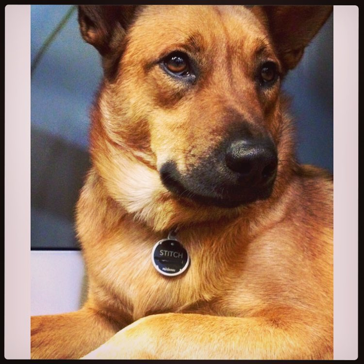

This collar was created with my dog Stitch in mind.

He is a 3 year old Red Heeler/Cattle Dog Mix that loves his squirrels. One fantastic part about living in Boulder, Colorado is the dog-friendly town. Boulder has implemented a Voice and Sight tag program to allow dogs to be offleash in certain areas. When voice and sight aren't enough, I developed a solution for the case where dogs get away from you.
I created the Heeler collar. This collar is able to track where your furry friend is based on GPS location. These coordinates are sent to the device that you synced up over Bluetooth. Open up the application, and you can see where your pet has scurried off to!